ショウキサマ/新潟県阿賀町
前編
新潟県阿賀町。日本有数の大河、阿賀野川の中流域に位置する山間の町だ。
山間を滔々と流れるその渓相は阿賀野川ラインと呼ばれ、人気の景勝地でもある。
そんな阿賀町の5つの集落にショウキサマと呼ばれる大きな藁人形がいる。
毎年2〜3月に集落の人々によって作りかえられている、ムラの守り神だ。
これまで当サイトでは秋田県の人形道祖神や福島県のオニンギョウ様といった大型の藁人形を紹介してきた。
これらはムラに侵入してこようとする悪疫を防ぎ、悪い余所者を退散させるための人形である。
従って恐ろしさを強調させる事が造形上の最大のテーマとなっている。
平和な農村での恐怖の創造、そのアンビバレントな主題こそが東日本における藁人形習俗の鑑賞ポイントと私は心得ている。それは今まで漠然とイメージしてきた日本の農村文化の見えざる一面でもあるのだ。
もちろん恐怖の創造に慣れていない善人がつくる人形なので怖くつくったつもりがギャグっぽくなっちゃった…というのが個人的には一番ポイントが高いのだが。
そんな人形道祖神によく似た阿賀町のショウキサマもやっぱりファンキーな姿で農村に君臨している。
その極端なまでのアグレッシブ具合はひっそりとしたムラの中でひときわ異彩を放っていると言わざるをえない。
よくステレオタイプで語られがちな長閑で平和なだけじゃない、もうひとつのニッポンの原風景を見てみようじゃないの。
平瀬のショウキサマ
阿賀のショウキサマ巡りは阿賀野川の上流（つまり会津サイド）から下流へと紹介していこう。
トップバッターは平瀬（びょうせ）のショウキサマから。
平瀬は阿賀野川と併走する磐越西線の日出谷駅の側を挟んですぐ西に位置する集落。
まあ、すぐとは言っても1キロくらいですけど…
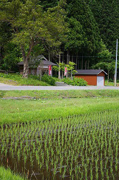
ゆるやかな傾斜地に位置する平瀬の集落。
中心には集会所があり、その向かいに近年建てられたお堂がある。
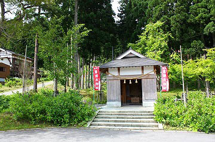
その中にショウキサマが祀られていた。
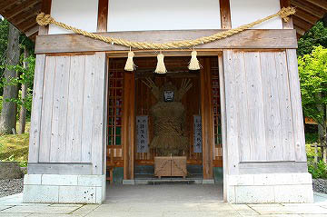
如何であろう、この雄姿。身長2.5メートル。体重200キロ。ムラの守り神にふさわしい迫力。
でもチョット間抜けっぽいところが好感が持てますね…
最初に紹介するショウキサマなので他の地区との比較ポイントとなる各パーツの説明等をしつつ細かいところを見てみましょ。
頭の上にはアンテナのような角。これが何を意味しているのか…
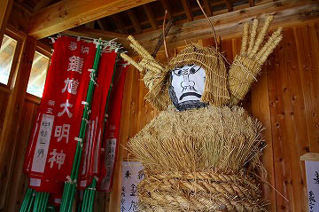
あッ、そういえば鍾馗サマって頭にアンテナみたいなの付けてたわ。
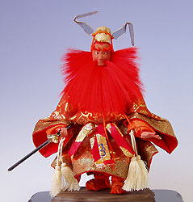参考資料；適当にコピってきました
ショウキサマという呼称はもちろん鍾馗様の事を指している。
秋田県の人形道祖神の中でもショウキサマという呼称のものがあったが、これといって鍾馗を信仰しているのか、と言えばそうではない。
恐らく何となく強そうな名前だから、そう呼んじゃお、といったノリなのではないだろうか。私見ですけど。
ちなみに秋田ではニオウサマ、オニンギョウサマ、カシマサマ、ドジンサマといった名前で呼ばれるケースが多いが、ショウキサマという呼称も結構あった。しかも私が秋田で見たショウキサマの中で阿賀と同じく藁製の頭部を持つショウキサマだけがアンテナのような角があった。他のカシマサマやニオウサマにはアンテナはなかったのを見ると、東日本における巨大藁人形の中でもショウキサマだけが共通の形をもっていることになる。これはショウキサマ信仰、とまでは言わないまでも、東日本ではショウキサマの認識のされ方が頭のアンテナに集約されている事を物語っている。
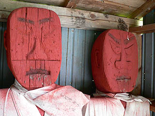
↑参照；秋田県横手市のショウキサマ
何と言っても目がいっちゃうのがこの巨大なイチモツ。
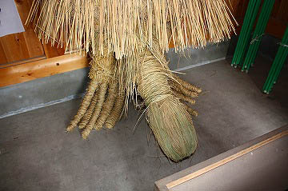
阿賀町の5箇所のショウキサマに諸々差異はあるが、この巨大なイチモツだけは皆さんシッカリ作りこんでいました。
つまりこの巨根がショウキサマ習俗のキモかと。
ちなみに秋田の人形道祖神でも性器が付いた人形は幾つかあったがここまで強調してあるもの（つまり巨大なモノ）は少なかった。
かつてはムラの入口付近にある神社に設置していたそうだ。
ムラの入口、巨大なイチモツ、ショウキサマという呼称、そしてどおくまんっぽい恐顔。
秋田の人形道祖神に極めて似ている。
夏渡戸のショウキサマ
平瀬の集落から阿賀野側沿いの道を下流に向かうと次の集落は夏渡戸（なつわど）である。
ここにもショウキサマがいる。
昔は隣から隣へと多くの集落でショウキサマを祀っていたのだろうか。
夏渡戸は平瀬よりも小規模で、川に沿った街道に何件かの家が並ぶ、そんな構造の集落である。
そんな夏渡戸には2つのショウキサマが存在する。
まずは集落の上流方面、つまり平瀬側の入口にあるショウキサマ。
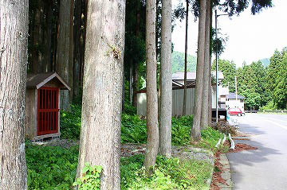
小さな祠の中に存在感抜群のショウキサマがいた。
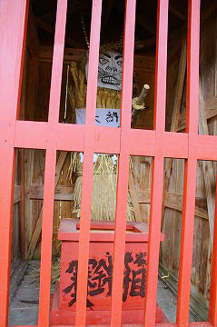
それにしても「賽銭箱」のフォントが素敵ですね。
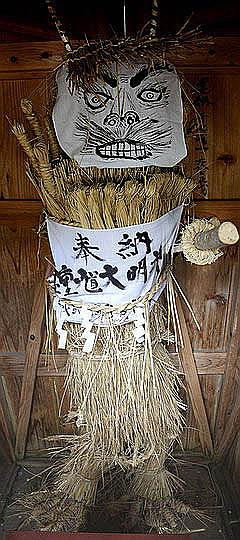 ここ、夏渡戸のショウキサマの最大の特徴はムラの上と下の両方にそれぞれ男女のショウキサマが設置されていることだ。
男女二体のショウキサマを祀っているのは夏渡戸でしか見られなかった。
この男女二体の藁人形がムラの上下に設置されるパターンは秋田県の北部に数多く見られる。何故夏渡戸のショウキサマだけがそうなのか、謎である。
女性のショウキサマって何だ？との声も聞こえてきそうだが、逆に女性のショウキサマが存在する事自体が本来の鍾馗信仰から離れて独自の信仰形態を獲得している証拠だと思う。
そう、このショウキサマという存在は鍾馗とは別の、東日本の民間信仰におけるカミサマなのだ。
ここのショウキサマもアンテナがピンコ立ち。
そしてかなり強烈なお顔立ち。
その姿はさしずめ暴れん坊が檻に入れられているかのようだ。
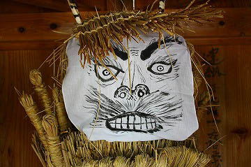
これもまた両手が頭の両脇についているタイプだが、造形が若干甘いため、何を言いたいのかは分からなかった。
刀は脇に差してある。
そして腹巻のように布が巻かれている。
奉納 鍾馗大明神 平成弐拾参月…とある。
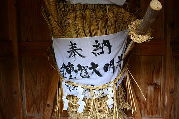
大明神、即ち神号が付いちゃってる訳で益々本来の鍾馗サマとは別モノになっているじゃないか…
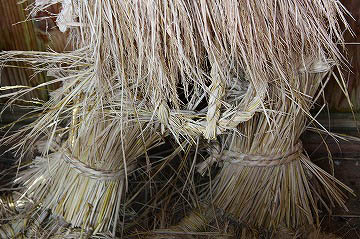
注目の（オイオイ)下半身は縒った藁をリング状にしてハイ、出来上がり。
他の地区にあるアホみたいな巨大なチンチンのアグレッシブ過ぎる表現に比べたら何とおとなしい事よ。
チョット照れ入ってますかね。
一方、下流サイドにあるショウキサマ。
こちらも鍾馗堂というお堂に納まっていた。
ちなみに上下の鍾馗堂とも同じ形で、最近作られたようだ。
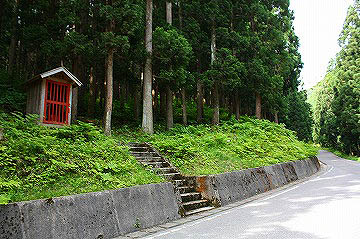
こちらが男版ショウキサマ。
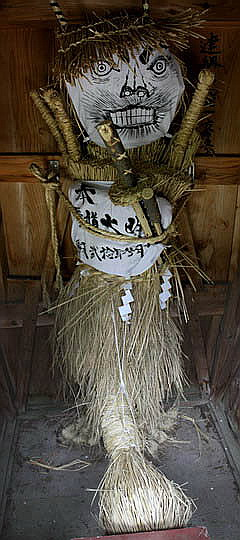 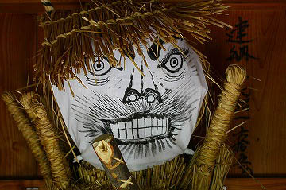
やっぱり男バージョンの方が心なしか表情が荒っぽいような気がする。
口の周りの皺なのか髭なのか、いずれにしても凄いことになっちゃってますね。
顔の絵を含めて角、手、持ち物等基本アイテムはほぼ一緒。
唯一にして最大の差異はもちろん足よりデカイ性器。
いくら何でもデカ過ぎるだろ。つか歩けないでしょ。
刀は男神の方だけ二本差しだった
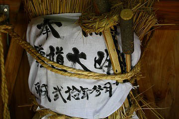
下からあおってみました。コエー。
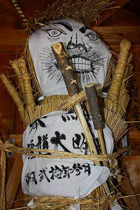
さて。
この辺で藁人形習俗の分布について根本的な説明をさせていただく。
東日本において藁人形習俗は2つのグループに分かれる。
ひとつは秋田、福島に代表される東北地方に多い道祖神としての藁人形。このタイプは関東でも数は少ないが茨城県、埼玉県、千葉県でもその存在が確認されている。
もうひとつは甲信越で多く見られる小正月に燃やされる依り代としての藁人形。
前者は1年間ムラの境に設置され、後者は作ってすぐに燃やされる。
これはそれぞれの藁人形の持つ用途の違いから来るものだが、面白いことに、ここ阿賀のショウキサマと新潟県下、例えば柏崎のさいの神などは姿かたちが非常に似ている。特にチンチンを誇張してあるところとか。
それでは新潟県においてどうして東北地方でさかんな道祖神系統の藁人形を常設する習俗が存在するのだろう？
そこでポイントとなるのが阿賀の地理的条件だ。
この阿賀町は西会津地方に隣接しており、現在新潟県に組み込まれているとはいえ元々は会津藩の領地であり、明治初期までは福島県だったことを鑑みると会津地方の一部だったのだ。
さらに阿賀のショウキサマ習俗のオーソリティーである石本敏也氏の調査によると今は消滅してしまったがかつては会津地方にも数多くの藁人形が存在していたというのだ。
つまり、阿賀町のショウキサマも東北地方の連綿とした文化的連続性の中にある、と考えられる。
珍寺大道場 HOME